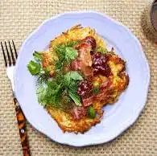
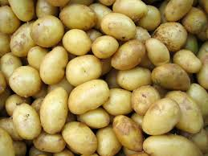

Recept på klassisk raggmunk
Ingredienser
- 5 st medelstora potatisar
- 2,5 dl mjölk
- 1 dl vetemjöl
- 1 ägg
- 1 tsk salt
- Smör eller olja till stekning
- 200 g rimmat sidfläsk
- Lingonsylt
Instruktioner
- Vispa ihop mjöl, hälften av mjölken, ägget och saltet till en smet.
- Skala och riv potatisarna. Krama ur överflödig vätska och blanda ner i smeten.
- Hetta upp en stekpanna med smör eller olja och stek tunna pannkakor av smeten.
- Stek sidfläsket tills det är knaprigt.
- Servera raggmunkarna med sidfläsk och en klick lingonsylt.
